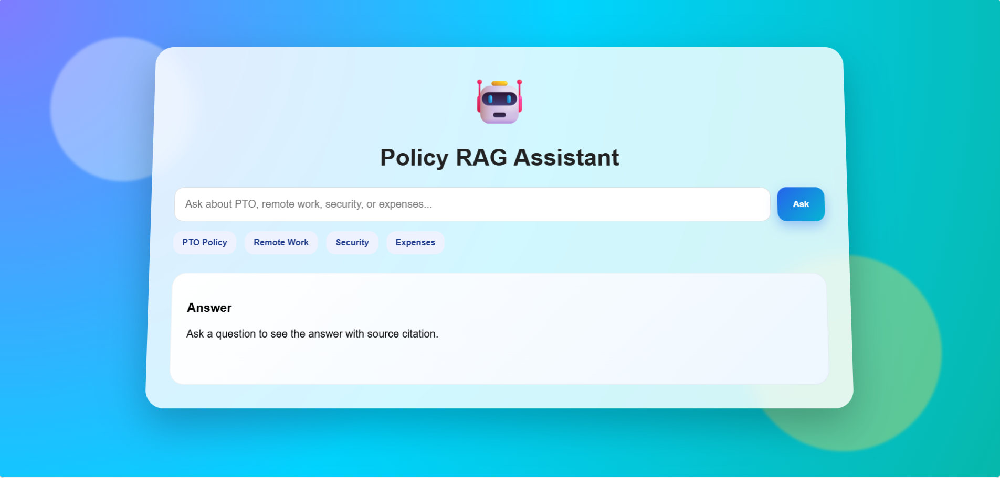
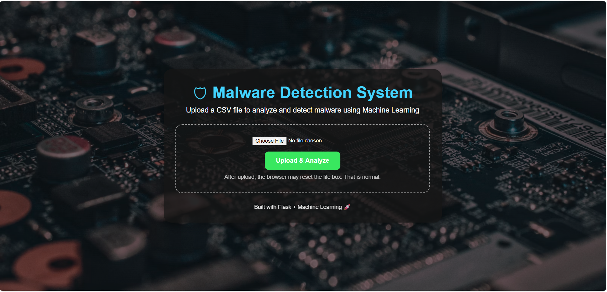
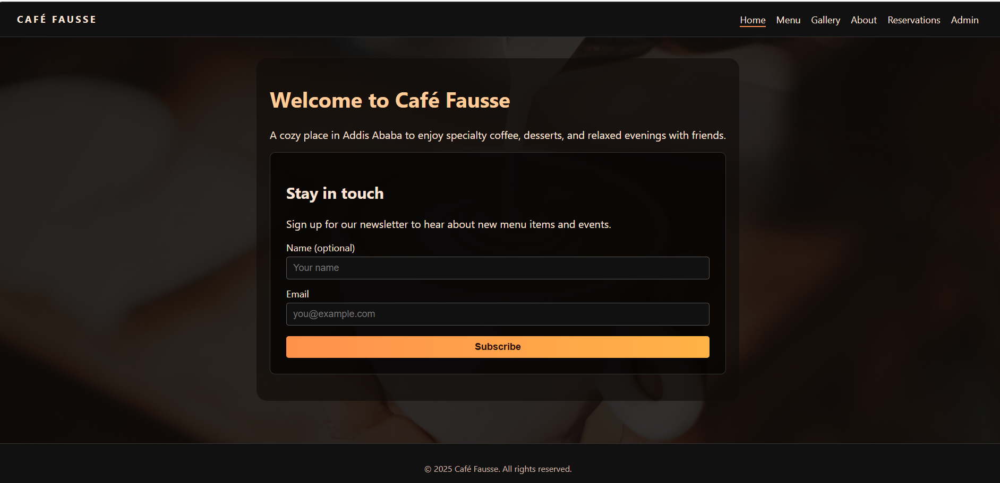

👋 Hello, I'm
I build practical software and AI projects while growing my skills in software engineering, machine learning, data analysis, and digital technology.
Years IT Experience
Software Engineering Student
Featured Projects
Information Technology
I am an experienced IT professional with over 10 years of experience in technical support, customer service, IT operations, and digital systems.
I am currently pursuing a Master of Software Engineering at Quantic School of Business and Technology while building projects in AI, machine learning, and web development.
Quantic School of Business and Technology — In Progress
Bahir Dar University

AI assistant that retrieves information from documents and generates grounded answers with citations.
View Project
Machine learning project focused on malware detection using Python and Flask.
View Project
Full-stack web application project with frontend and backend functionality.
View ProjectYou can view or download my professional CV below.
View Resume